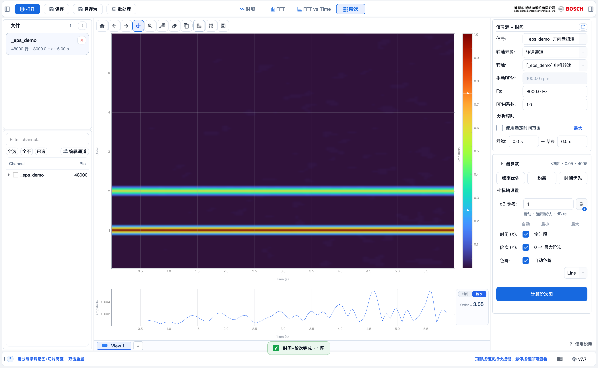

TraceLab v7.7
阶次分析 / Order
阶次分析 / Order
操作指南 · ORDER ANALYSIS
阶次分析
认准界面 6 个位置，5 步算出阶次彩图。
先认准位置 · 在哪点什么

1
2
3
4
5
6
✕
1
顶部 · 切到「阶次」
2
右栏上 · 信号源 （信号 / 转速 / Fs）
3
右栏中 · 谱参数 （3 个预设）
4
右栏下 · 计算阶次图
5
中间 · 彩图 + colorbar
6
图下 · View 标签 （右键加对比窗格）
✕
左侧列表 不在这选信号 （时域才用）
02 · 选信号源
01 · 02
切到阶次，右栏选来源
①
顶部点阶次。
②
右栏上部选信号（方向盘扭矩）、转速（电机转速），确认 Fs。
⚠️
信号在右栏下拉选，不是左侧列表（左侧只时域用）。
信号源 + 时间右栏上部
信号方向盘扭矩 ▾
转速电机转速 ▾
Fs600 Hz
RPM系数1.0
03 · 选谱参数
03
右栏中部挑一个预设
③
右栏中部的谱参数，点一档：频率优先 / 均衡 / 时间优先。
▸
先用预设最省事；要细调再展开。摘要 ≤20阶 · 0.1 · 自动 一眼看配置。
谱参数右栏中部
≤20阶 · 0.1 · 自动(4096)
频率优先均衡时间优先
最大阶次20
阶次分辨率0.1
时间分辨率0.05 s
04 · 计算 + 读图
④
点计算阶次图 → 出彩图。
⑤
点彩图任意点 → 下方看该处剖面。
💡
拖右侧 colorbar 调色阶，不必重算。
点这取切片
该阶次的时间剖面
阶次时间
05 · 一屏对比两个通道
右键 View → 添加对比窗格
①
右键底部 View 1 标签 → 选添加对比窗格。
②
点窗格 → 右栏信号各选
方向盘扭矩 / 电机扭矩。
③
点计算阶次图 → 左右并排比。
注：底部 ＋ 可新建一个 View（页）。
View 1＋
重命名
复制此 View
改标签颜色…
添加对比窗格
删除
左 · 方向盘扭矩● 焦点
右 · 电机扭矩○
+ · 跨速率 + 频率加权
+
转速记得稀也能算
▸
转速通道和信号通道采样率不同也没关系：比如电机转速记得稀、振动记得密，软件会自动对齐再算阶次。
▸
阶次的基准是电机转速——第 N 阶＝振动频率是电机转速的 N 倍。
▸
分析声音类信号时，右侧 频率加权 可切 A 计权（IEC 61672），更贴近主观响度。
转速 / 信号可不同采样率
✓电机转速 · 1 kHz
✓振动 · 8 kHz
两路采样率不同，软件自动对齐——问题阶次仍稳稳落在同一条线上。